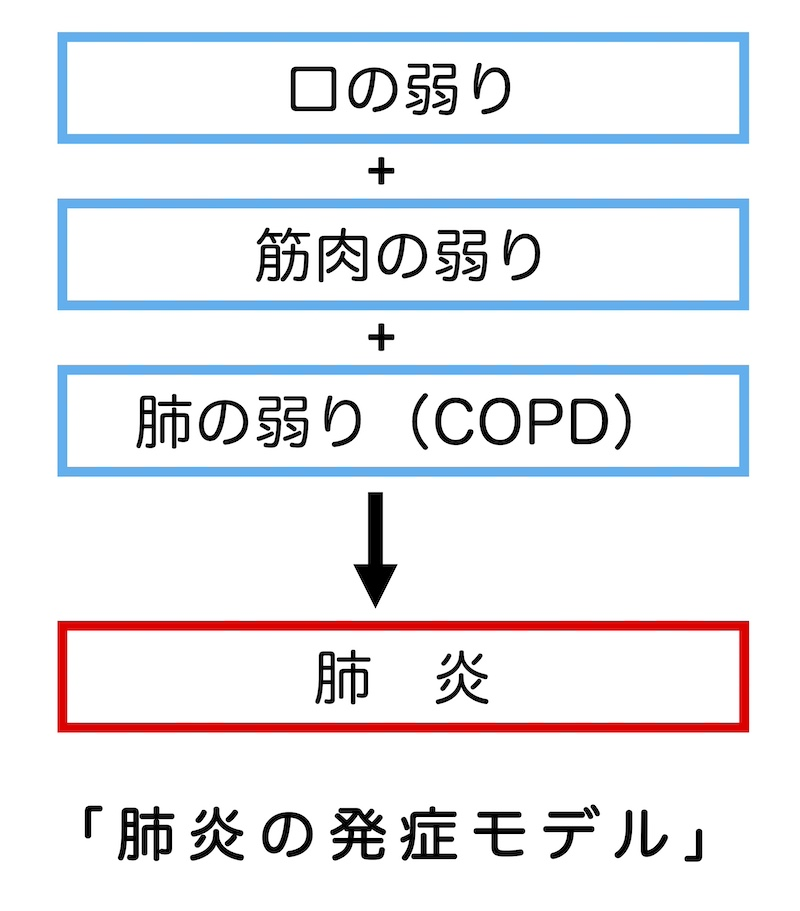
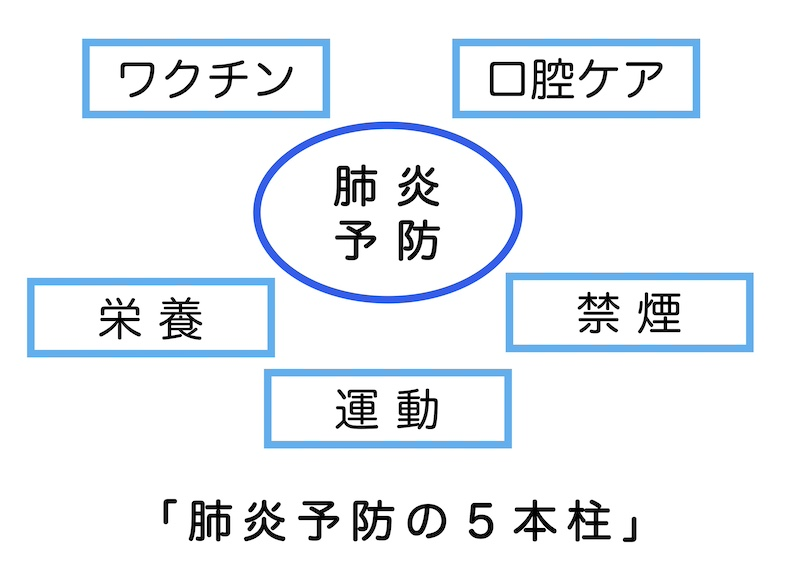

公開日：2026年5月｜最新更新：2026年5月
高齢者の肺炎は、「寝たきり」や「死亡」の大きな原因の一つです。
しかし、多くは、日常の工夫で予防できる病気なのです。注意点と対策を考えましょう。
「肺炎」が、高齢者に多い理由は、「免疫力の低下」「咳の力の低下」「飲み込み機能の低下」と言われています。
また、高齢者の肺炎は、「細菌・ウイルス感染」「誤嚥性肺炎」「COPDに合併する肺炎」が中心です。
代表的な感染症として、「肺炎球菌感染症」「インフルエンザ」「新型コロナウイルス感染症」があります。
これらについては、「ワクチン」「手洗い」「マスク」が重要になります。
高齢者肺炎の中心的なもので、原因は、「飲み込み機能の低下」「むせない誤嚥」「口内細菌の増加」であり、「飲み込み」と「口内の衛生」がカギになります。
「COPDは、主に喫煙が原因で起こり「空気の通り道が狭くなる」「息を吐ききれない」「慢性的な咳・痰・息切れ」が特徴で、高齢者に非常に多い病気」です。
「長引く咳や痰」「階段での息切れ」「喫煙歴」があれば、「医療機関へ」相談されることをお勧めします。

などにより、細菌が肺に入りやすくなります。
などにより、誤嚥しても排出できなくなります。
嚥下するための嚥下筋も筋肉です。
「COPD」の方は、「痰が多く、細菌が溜まりやすい」「咳の力が弱く、誤嚥しても排出できない」「栄養状態が悪く、免疫機能が低下する」などで、肺炎に移行しやすいと言われています。
言い換えると、「COPD」は「肺のフレイル」とも言えます。
例えば、
・６ヶ月で体重が２～３kg減少した
・食事量が減っている
などの場合は、低栄養状態である可能性が考えられます。

筋肉量や免疫機能の維持に大切です。
特に、誤嚥性肺炎予防の観点では、
「食事中の姿勢を正す」「食後すぐに横にならない」ことも重要です。
禁煙は最大の予防策です。
肺炎は突然起こる病気ではありません。
口・筋肉・肺が少しずつ弱ることから始まります。
日々の生活習慣が最大の予防です。
また、肺炎は１回起こすと再発しやすいとも言われています。
1. 椅子に座る
2. 鼻から4秒吸う（お腹を膨らませる）
3. 口をすぼめて6秒吐く（お腹をへこませる）
これを5～10回、一日に2～3回
1. 鼻から吸う
2. ろうそくを吹くようにゆっくり吐く
1回で10回程度、一日2セット
500mlのペットボトルに水を少量入れ、ストローでブクブク吹く。
10秒を5回
1. 深く吸う
2. 「ハッ、ハッ」と強く吐く
一日に5～10分間程度行い、毎日継続しましょう。
ただし、めまいや息苦しさが強い場合は、中止し、医師にご相談ください。
※本ページは公的機関および学会の情報などをもとに作成しています。